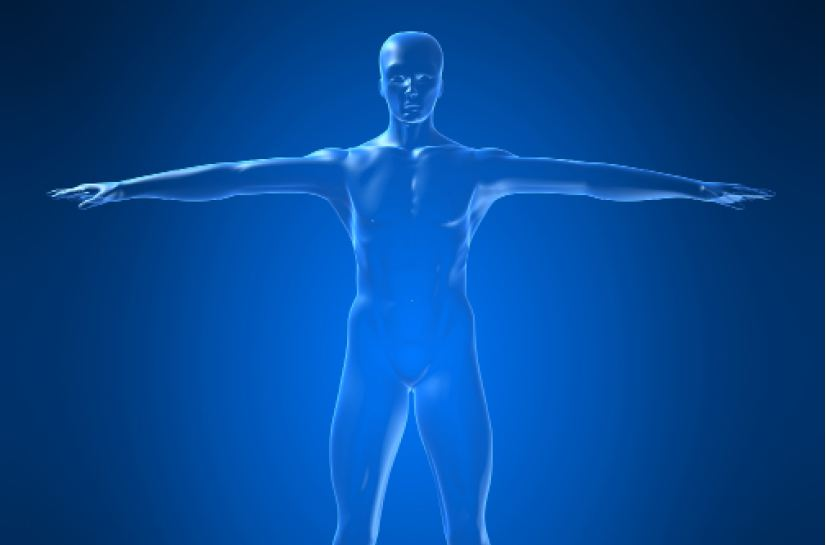

Body Integrity Identity Disorder
An unusual craving
Rebecca Ruebsamen
Fall 2008

A man enters the emergency room claiming that his left foot simply does
not belong to him. When the doctors refuse to amputate his physically
healthy limb, the man takes matters into his own hands, locating a saw
and cutting the offending foot off – without sedatives or professional
medical supervision. Although many may recognize this frightening
scenario as televised on the popular television show, Grey’s Anatomy,
Body Integrity Identity Disorder (BIID) is a very real condition.
Patients with BIID harbor an intense impulse to amputate a limb,
sometimes taking drastic measures to remove an appendage deemed
superfluous.
Michael First, MD, Columbia University, was
responsible for coining the term, “Body Integrity Identity Disorder,”
and has studied BIID in depth since 2005. Although only a few thousand
people worldwide are affected by this disorder, First is determined to
uncover exactly what BIID is. In his 2005 article, “Desire for
amputation of a limb: paraphilia, psychosis, or a new type of identity
disorder,” published in Psychological Medicine, First notes that BIID
patients can appear to be mentally healthy, aside from their desire to
become an amputee. Through his study, First was able to identify the
inner dilemma that his patients experience: the need to choose between
suffering the anxiety of yearning to become an amputee or suffering the
actual handicap of becoming an amputee. Although the options may seem
unreasonable to someone without BIID, people with the disorder are
profoundly troubled by this dilemma.
There are very particular symptoms that classify a
BIID patient which may not always be visibly apparent. BIID patients
with all limbs intact suffer from what they describe as a feeling of
being incomplete, and therefore often request amputation in order to
feel whole. The patient may also harbor a sense of jealousy towards
amputees. Often, those with BIID report knowing exactly which body part
they wish to have removed – generally found above the knee and on the
left side of the body. BIID sufferers feel alone and ashamed of their
desires for amputation and self-injury, possibly increasing their
desire for surgical removal of the undesired limb.
Patients afflicted with BIID often describe their
behavior as inherent, rather than a conscious decision to become an
amputee. Lack of public knowledge about this disorder often results in
misdiagnosis or a lack of recognition by doctors and those around the
patient. Although little is known about the definitive cause of BIID,
research is currently being conducted and has given way to several
speculations.
According to researchers working for the BIID
Association, which is composed of medical, psychological, and
psychiatric professionals committed to increasing awareness of BIID,
the disorder may have one of two possible causes. The first probable
cause is psychological and can often be traced back to childhood,
during which the patient may have associated amputees with increased
attention, sympathy, and compassion from others. The second possible
cause is neurobiological. BIID has been defied as a condition in which
an abnormality of the cerebral cortex results in confusion. The
resulting inner chaos leads to notions of lacking ownership of specific
limbs. This disorder has been localized to the inferior-parietal
lobule, a region located on the right side of the brain involved in
sensory processing and motor-sensory integration. This may explain why
the majority of amputees request left-side body amputations, as the
right side of the brain controls the left side of the body and vice
versa.
Much of the danger of BIID arises from the fact that
most doctors are not willing to amputate a perfectly healthy limb, as
they consider it unethical and unprofessional. This ultimately causes
many patients to attempt to remove the offending limb themselves, an
act that affects not only them but also those close to them. It is a
dangerous, life-threatening process when someone mutilates their own
body to ensure that a doctor will eventually have to amputate. Notable
cases have involved dry ice, chainsaws, and other dangerous maneuvers.
Thus, it is extremely important that public awareness of BIID grows.
Untreated, it can lead to mental instability, and if the patient acts
on their desire, a whole host of physical problems including infection,
shock, or fatal bleeding.
Recently, BIID has been getting considerable media
coverage on television. Since BIID is not well-known, cases of the
disease on popular shows such as Grey’s Anatomy may help encourage
awareness. However, in order to educate the public that this is not a
fictional disease, it is important that BIID is portrayed correctly and
without exaggeration. A more informed public is the first step toward
more research, which will hopefully lead to fewer misdiagnoses and a
stronger acceptance of those suffering from BIID.
About the Author
Rebecca Ruebsamen is a first year Nutritional Science major. Her future aspiration is to become an obstetrician.